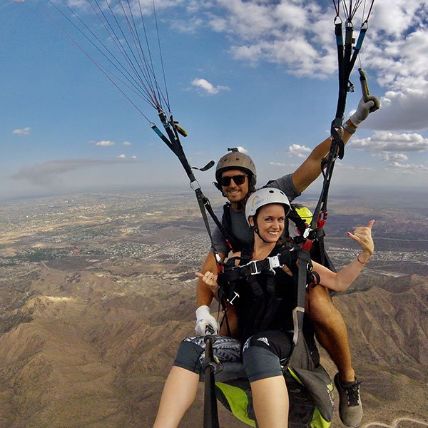
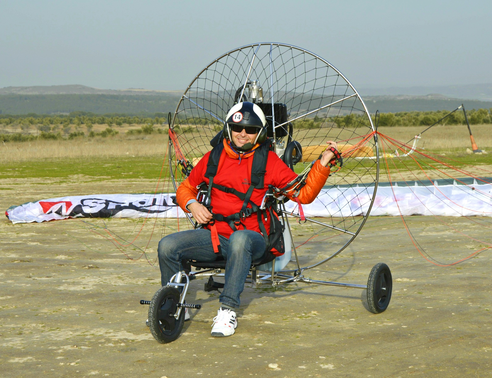
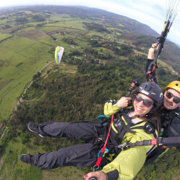

VUELO BIPLAZA

Se realiza con un instructor y en buenas condiciones climaticas, con equipos en excelente estado y ultima generacion.
El vuelo se compone de un despegue de aproximadamente 3 pasos quedando en el aire, subiendo a mas de 400 metros. Desde la altura vas a poder ver toda la ciudad y el Rio la Plata. El aterrizaje es lo mas parecido a bajar de un escalera
El pasajero solo recibe una instruccion previa al vuelo de 10 minutos, donde se le explica como despegar junto al instructor, sentarse, y el aterrizaje.
Opcional:Video $1.200 Set 10 fotos $1.200. Video + 10 fotos $1.600. Vola por: $ 8950
PARAKITE

Se realiza con un instructor y en buenas condiciones climaticas, con equipos en excelente estado y ultima generacion
El vuelo se compone de un despegue con motor que lleva el instructor en su espalda, ademas cuenta con un carro con ruedas para que el aterrizaje sea mas suave aun. Se logra subir a mas de 400 metros. Desde la altura vas a poder ver toda la ciudad y el Rio la Plata. El aterrizaje es lo mas parecido a bajar de un escalera
El pasajero recibe una instruccion previa al vuelo de 10 minutos, donde se le explica como despegar junto al instructor, sentarse, y el aterrizaje.
Opcional: Video $750 Valor: $ 9500
ESCUELA

Se practica en tierra, consiste en inflado del parapente, control de despegue y simulacie aterrizaje. Reconocimiento del equipo.
Tecnicas de vuelo, toma de comandos. El alumno toma una serie de diez vuelos, asistidos por radio, los cuales se dividen en vuelos pasivos y activos. Duracion Curso: 2 meses. 15 Vuelos entorno en Buenos Aires.
Valor del curso: U$S 950